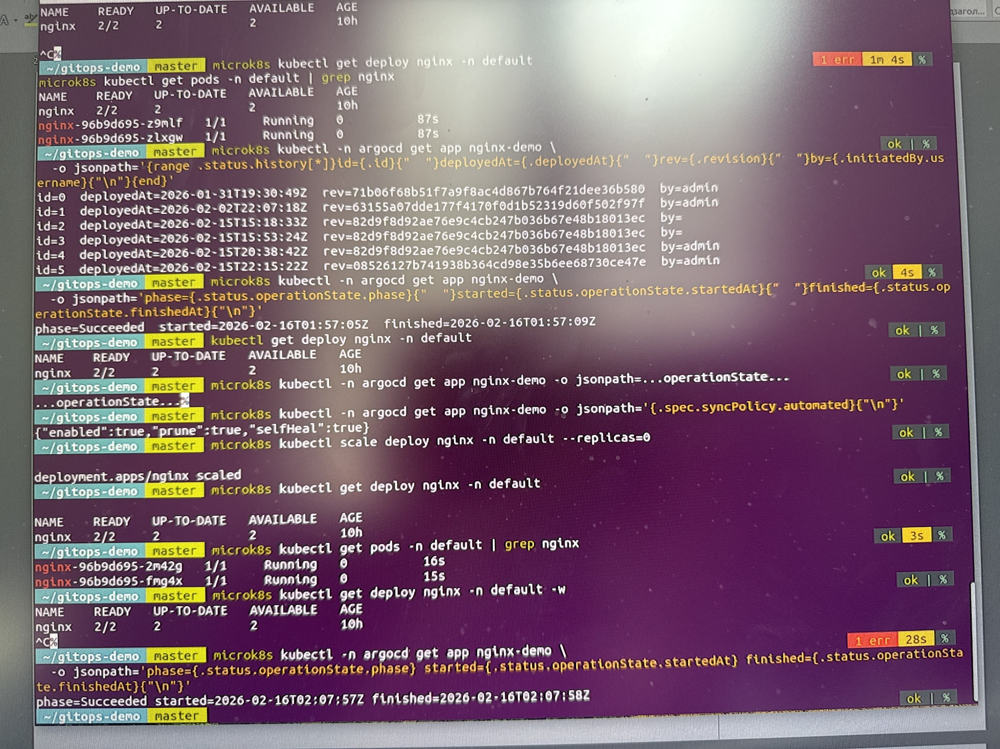
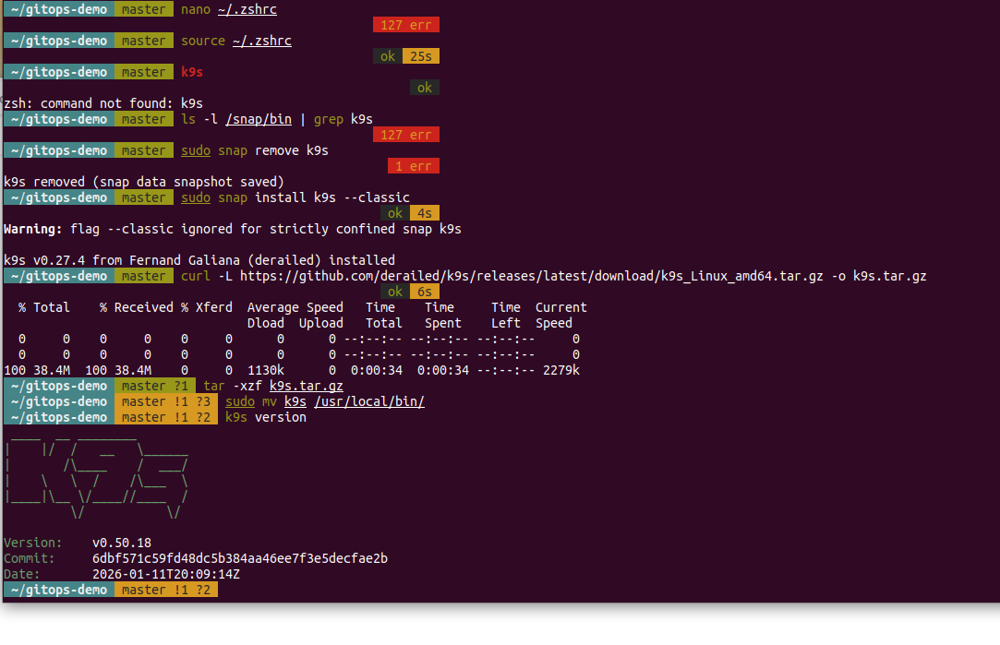
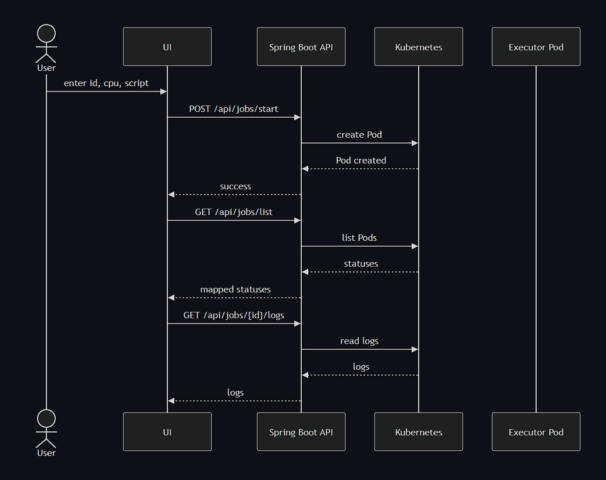

Procesy a zatížení systému
uptime
top
ps aux --sort=-%cpu | head
ps aux --sort=-%mem | head
pgrep -af nginxKontrola zatížení serveru, procesů s nejvyšší spotřebou CPU nebo paměti a vyhledání konkrétní běžící služby.
Výběrové řízení · Onlio, a.s.
Přehled mých pracovních zkušeností se správou Linuxových systémů, cloudové infrastruktury, monitoringem, automatizací a provozem zákaznických prostředí.
Úvod
Dobrý den, paní Tindel,
děkuji Vám za zprávu a za možnost podrobněji představit své zkušenosti. Níže uvádím odpovědi na jednotlivé otázky včetně ukázek praktické práce s cloudovým prostředím, Kubernetes, serverovým hardwarem a zákaznickou infrastrukturou.
Otázky 1–8
Jednotlivé bloky lze otevřít samostatně. Navigace v horní části stránky umožňuje rychlý přechod na konkrétní otázku.
V současnosti dokončuji magisterské studium informatiky na České zemědělské univerzitě v Praze. Všechny studijní předměty mám splněné a zbývá mi pouze obhajoba diplomové práce. Z tohoto důvodu jsem nyní plně k dispozici pro práci na hlavní pracovní poměr.
Moje poslední relevantní pozice byla Junior Linux Administrator ve společnosti Cloudinfrastack v Praze. Pracoval jsem v prostředí velkého privátního cloudu, který zahrnoval více než 300 fyzických serverů využívaných různými zákaznickými projekty.
Každodenní práce spojovala kontrolu provozu, reakce na monitorovací upozornění, prvotní analýzu incidentů, práci s Linuxovými servery, cloudovými virtuálními stroji, úložištěm a fyzickým hardwarem v datacentru. Součástí práce byla také komunikace se zákazníky a kolegy během nepřetržitého provozu.
U běžných incidentů jsem samostatně ověřoval stav serveru, dostupnost služeb, systémové prostředky, síťovou komunikaci a související logy. U složitějších nebo rizikových zásahů jsem problém zdokumentoval a předal zkušenějšímu administrátorovi s již připravenými technickými informacemi.


Nejvíce praktických zkušeností mám se servery Ubuntu 22.04 a 24.04. V předchozích pracovních prostředích jsem používal také Astra Linux a své znalosti nyní rozšiřuji směrem k enterprise distribucím založeným na Red Hat Linuxu, CentOS Stream a openSUSE.
Při každodenní administraci jsem se k serverům připojoval prostřednictvím SSH, kontroloval stav systémových služeb, běžící procesy, zatížení CPU, využití operační paměti, diskový prostor a síťovou dostupnost. Při problému jsem nejprve ověřil celkový stav serveru a následně pokračoval ke konkrétní službě, jejím logům a závislostem.
Pro základní kontrolu serveru jsem používal například
příkazy uptime, top,
ps, free,
df, du,
lsblk, systemctl
a journalctl. Pomocí nich jsem ověřoval,
zda problém způsobuje nedostatek prostředků,
zastavený proces, zaplněný disk nebo chyba konkrétní
systémové služby.
uptime
top
ps aux --sort=-%cpu | head
ps aux --sort=-%mem | head
pgrep -af nginxKontrola zatížení serveru, procesů s nejvyšší spotřebou CPU nebo paměti a vyhledání konkrétní běžící služby.
free -h
vmstat 1 5
cat /proc/meminfo
swapon --showOvěření dostupné paměti, využití swapu a toho, zda server netrpí dlouhodobým nedostatkem RAM.
df -hT
lsblk -f
du -xhd1 /var | sort -h
find /var/log -type f -size +500M -lsKontrola zaplnění disků, typu souborového systému, připojených svazků a vyhledání adresářů nebo logů, které spotřebovávají nejvíce prostoru.
systemctl status nginx
systemctl --failed
journalctl -u nginx --since "1 hour ago"
journalctl -p err -bKontrola stavu služby, neúspěšných systemd jednotek a chyb zaznamenaných od posledního spuštění serveru.
Znalosti Linuxu si dále systematicky rozšiřuji prostřednictvím kurzu Introduction to Linux 1. V laboratorním prostředí porovnávám administraci distribucí Ubuntu, CentOS a openSUSE, včetně práce s balíčkovacími systémy a základní konfigurací serveru.

Součástí mé zkušenosti není pouze vzdálená práce s operačním systémem. Pracoval jsem také přímo s fyzickými rackovými servery, jejich instalací, kontrolou komponent, výměnou paměti, disků a diagnostikou problémů při startu. Díky tomu dokážu lépe rozlišit, zda se problém nachází na úrovni aplikace, operačního systému, disku nebo fyzického hardwaru.


Monitoring a prvotní diagnostika patřily mezi hlavní části mé práce v Cloudinfrastacku. Prostřednictvím monitorovacího prostředí Sensu a Uchiwa jsem reagoval na upozornění týkající se nedostupných serverů, zastavených služeb, zaplněných disků, problémů s databázemi, certifikáty nebo centrální konfigurací.
Po přijetí alertu jsem nejprve ověřil, zda jde o skutečný incident, krátkodobý výkyv nebo následek plánované změny. Následně jsem zkontroloval dostupnost serveru, využití systémových prostředků, stav služby, otevřené porty a související systémové nebo aplikační logy.
Při problému s diskovým prostorem jsem pomocí
df a du nejprve zjistil,
který souborový systém nebo adresář je zaplněný.
Potom jsem dohledal rychle rostoucí logy, dočasné
soubory nebo starší data. Před odstraněním dat jsem
vždy ověřil jejich význam a případnou retenční
politiku, aby zásah nezpůsobil další problém.
U nefunkční služby nebo démona jsem kontroloval její stav v systemd, poslední chybové záznamy a dostupnost portu. Pokud byl restart bezpečný a odpovídal provoznímu postupu, službu jsem restartoval a následně ověřil nejen stav Active, ale také její skutečnou dostupnost a návrat monitoringu do normálu.
V prostředí spravovaném Puppetem jsem kontroloval průběh Puppet agenta, chyby při aplikování konfigurace a stav SSL certifikátů. Setkal jsem se například se situacemi, kdy agent nemohl navázat komunikaci s Puppet serverem nebo kdy bylo potřeba odstranit neplatný certifikát a vytvořit nový.
df -hT
du -xhd1 /var | sort -h
du -xhd1 /var/log | sort -h
find /var/log -type f -size +500M -ls
journalctl --disk-usage
logrotate -d /etc/logrotate.confNejprve jsem určil zaplněný filesystem, potom dohledal největší adresáře a soubory. Konfiguraci logrotate bylo možné ověřit nejprve v testovacím režimu bez okamžitého odstranění dat.
systemctl status nginx
systemctl --failed
journalctl -u nginx -n 100
journalctl -u nginx --since "30 min ago"
ss -lntup
curl -I http://127.0.0.1
sudo systemctl restart nginxPo restartu jsem ověřil proces, naslouchající port, lokální odpověď služby a stav v monitorovacím systému.
sudo puppet agent -t
sudo puppet agent --test --debug
sudo puppet cert list --all
sudo puppet cert clean <hostname>Puppet agent jsem spouštěl ručně při kontrole konfigurace. Pokud byl certifikát hostu neplatný, bylo možné jej na Puppet serveru vyčistit a následně nechat host vytvořit nový požadavek.
openstack server list
openstack server show <server-id>
ceph -s
ceph osd tree
mysql -e "SHOW SLAVE STATUS\G"Při širším incidentu jsem ověřoval také stav virtuálního serveru, Ceph clusteru nebo databázové replikace, protože chyba služby mohla být pouze důsledkem problému v jiné vrstvě infrastruktury.
Důležitou částí řešení incidentu byla také komunikace se zákazníkem. Zákazníkovi nebo kolegům jsem předal, co bylo nedostupné, jaké kontroly jsem provedl, zda byl nalezen pravděpodobný důvod a jaký byl výsledek zásahu. Pokud problém vyžadoval hlubší oprávnění nebo změnu s vyšším rizikem, připravil jsem potřebné technické informace a incident eskaloval zkušenějšímu administrátorovi.
Incident jsem považoval za vyřešený až po ověření služby z několika úrovní: stav procesu, systémové logy, síťový port, odpověď aplikace a potvrzení monitoringu. Tím jsem omezil situace, kdy služba sice formálně běžela, ale pro zákazníka stále nebyla dostupná.
Ověření skutečnosti incidentu, jeho času a možného dopadu na zákaznické prostředí.
Kontrola prostředků, služby, logů, sítě, certifikátů a souvisejících komponent.
Bezpečné provedení opravy, restartu, aplikování konfigurace nebo eskalace.
Kontrola služby, portu, logů a návratu monitoringu do normálního stavu.
Moje praktické zkušenosti propojují provoz Linuxových serverů, cloudovou infrastrukturu, Kubernetes a vývoj nástrojů, které usnadňují každodenní správu prostředí.
V produkčním prostředí jsem pracoval s Ubuntu servery, virtuálními instancemi v OpenStacku, distribuovaným úložištěm Ceph a centrální správou konfigurace pomocí Puppetu a Foremanu. Kontroloval jsem stav serverů a služeb, reagoval na monitoring, analyzoval logy a ověřoval stav infrastruktury po provedeném zásahu.
Rozsáhlejší praktickou zkušenost s Kubernetes jsem získal během přípravy diplomové práce. Na Ubuntu serveru jsem vytvořil MicroK8s cluster, nainstaloval Argo CD, propojil jej s GitHub repozitářem a nasadil demonstrační aplikaci pomocí Helm chartu. Pracoval jsem s Deploymenty, Pody, Services, ReplicaSety, namespaces, YAML manifesty, logy a událostmi v clusteru.


Prakticky jsem ověřoval také princip GitOps. Požadovaný stav aplikace byl uložen v Git repozitáři a Argo CD automaticky porovnávalo tento stav se skutečným stavem clusteru. Při změně počtu replik nebo při ruční odchylce v clusteru dokázalo změnu detekovat, provést synchronizaci a pomocí self-healingu obnovit správný počet běžících Podů.
Pro pohodlnější kontrolu clusteru jsem nainstaloval a používal také K9s. Pomocí tohoto nástroje jsem sledoval stav Podů, jejich restarty, IP adresy, přiřazení k nodům a jednotlivé provozní stavy, například Running, Pending, Completed nebo Error. K9s mi umožnil rychleji se orientovat v clusteru bez nutnosti opakovaně zadávat jednotlivé příkazy kubectl.
Při instalaci K9s jsem narazil také na praktický problém. Verze nainstalovaná prostřednictvím Snapu nebyla správně dostupná v shellu, proto jsem nefunkční instalaci odstranil, stáhl aktuální binární verzi z GitHub releases, rozbalil ji a umístil do systémové cesty. Následně jsem ověřil verzi aplikace a připojení ke kontextu MicroK8s.


Další zkušenost vychází z mého vlastního projektu TeamCity Cloud Remote Shell Executor. Jde o demonstrační aplikaci inspirovanou principem dočasných build agentů. Vytvořil jsem backend v Kotlinu a Spring Bootu, který komunikuje s Kubernetes prostřednictvím klientské knihovny Fabric8.
Uživatel zadá prostřednictvím webového rozhraní identifikátor úlohy, požadované CPU a shellový skript. Backend vstup ověří a následně v Kubernetes vytvoří samostatný dočasný Executor Pod. Aplikace potom umožňuje sledovat stav úlohy, zobrazit její logy a ukončit nebo odstranit Pod po dokončení práce.
Ve webovém rozhraní jsem vytvořil také přehled běžících a dokončených úloh. Kubernetes stavy jsem mapoval na jednodušší uživatelské stavy, například Queued, Failed nebo Finished. Díky tomu není pro základní správu úloh nutné pracovat přímo s příkazovou řádkou nebo Kubernetes API.

Projekt mi pomohl prakticky pochopit životní cyklus Podu, vytváření zdrojů přes Kubernetes API, přidělování prostředků, čtení logů, zpracování stavů a odstraňování dočasných workloadů. Současně jsem si ověřil propojení webové aplikace, backendové služby a Kubernetes clusteru.

Znalosti Kubernetes si dále systematicky rozšiřuji studiem odborné literatury, například knihy Kubernetes: Up & Running. Zaměřuji se zejména na fungování Services, ClusterIP, kube-proxy, síťové komunikace mezi Pody, scheduling, health checks a provoz aplikací v clusteru. Teoretické principy se snažím vždy ověřit také prakticky ve vlastním laboratorním prostředí.
S automatizací jsem pracoval jak v produkčním prostředí, tak ve vlastních projektech. V Cloudinfrastacku jsem využíval již připravenou automatizaci pro centrální správu konfigurace serverů. Kontroloval jsem průběh aplikování konfigurace, řešil problémy agentů a ověřoval stav používaných certifikátů.
Hlavní výhodou bylo odstranění opakovaných ručních zásahů. Stejná konfigurace mohla být řízeně distribuována na větší počet serverů a v případě chyby bylo možné dohledat, na kterém hostu a v jakém kroku problém vznikl.
V diplomové práci jsem automatizaci implementoval pomocí GitOps. Po změně konfigurace v Git repozitáři Argo CD automaticky rozpoznal novou verzi, porovnal ji s běžícím clusterem a provedl synchronizaci bez nutnosti ručně aplikovat manifesty.
V projektu Remote Shell Executor jsem automatizoval vytvoření dočasného pracovního prostředí pro každou úlohu. Uživatel zadá požadavek a aplikace sama vytvoří Pod, nastaví mu požadované prostředky, spustí příkaz, sleduje jeho stav a zpřístupní výsledek. Manuální vytváření executorů tím bylo nahrazeno opakovatelným procesem.
Uživatel nebo Git vytvoří nový požadovaný stav.
Aplikace ověří vstupy a připraví potřebnou konfiguraci.
Kubernetes nebo GitOps controller provede změnu.
Systém ověří výsledek, stav workloadu a dostupné logy.
Mám praktické zkušenosti se správou interní i zákaznické infrastruktury. V Cloudinfrastacku jsem pracoval s prostředími, která byla využívána různými zákazníky, a proto bylo při každém zásahu důležité zohlednit nejen stav konkrétního serveru, ale také jeho roli, návazné služby a možný dopad na uživatele.
Se zákazníky jsem komunikoval prostřednictvím chatu v češtině a angličtině. Upřesňoval jsem s nimi projevy problému, informoval je o provedených kontrolách a předával průběžný stav řešení. Po dokončení zásahu jsem stručně popsal výsledek a ověřil, zda je služba z pohledu zákazníka opět dostupná.
Součástí mé práce byla také fyzická správa infrastruktury. Podílel jsem se na instalaci a demontáži rackových serverů, zapojování kabeláže, instalaci operačních systémů a diagnostice problémů při spuštění zařízení. Prováděl jsem kontrolu disků, operační paměti, základních desek, síťových rozhraní a dalších hardwarových komponent.
Již v předchozích zaměstnáních jsem manuálně opravoval stolní počítače, notebooky i servery. Prováděl jsem výměny disků a paměti, čištění a údržbu chladicích systémů, diagnostiku základních desek, obnovu operačních systémů a vytváření záložních kopií. Po opravě jsem vždy ověřoval stabilitu systému, funkčnost zařízení a dostupnost potřebného softwaru.
Zkušenosti mám také s instalací a diagnostikou zákaznických telekomunikačních přípojek. Pracoval jsem s technologiemi GPON, FTTB a ADSL, kontroloval fyzické zapojení, optické a metalické vedení, zákaznické terminály, modemy a síťovou dostupnost. Při problému jsem postupně ověřoval kabeláž, stav zařízení, synchronizaci linky, lokální síť a dostupnost služby.


V dřívější pozici PLC/SCADA inženýra jsem pracoval také přímo v průmyslových zákaznických prostředích. Podílel jsem se na diagnostice systémů Allen-Bradley, kontrole komunikace s PLC, úpravách HMI/SCADA vizualizací a servisních zásazích přímo na provozu. Tato zkušenost mě naučila pracovat opatrně v prostředí, kde může mít technická změna přímý dopad na výrobní proces.
Díky kombinaci práce se zákazníky, fyzickým hardwarem, síťovými přípojkami, servery a průmyslovými systémy se při řešení problému nedívám pouze na jednu vrstvu. Postupně ověřuji fyzické zapojení, síťovou komunikaci, operační systém, běžící službu a její dostupnost pro koncového uživatele.


Ano, právě kombinace provozu infrastruktury, automatizace a bezpečnosti odpovídá směru, kterým se chci dlouhodobě rozvíjet.
Moje zkušenosti začínaly u fyzické infrastruktury, sítí a oprav zařízení. Následně jsem se posunul ke správě serverů, monitoringu a cloudovému provozu. V současné době tyto zkušenosti propojuji s Kubernetes, GitOps a automatizovanou správou infrastruktury.
Bezpečnost vnímám jako součást každého provozního řešení, nikoliv jako samostatný krok na konci projektu. Změny by měly být auditovatelné, uživatelé a služby by měli mít pouze nezbytná oprávnění a citlivé údaje by neměly být součástí běžné konfigurace v otevřené podobě.
U projektu Remote Shell Executor je tento pohled obzvlášť důležitý, protože služba spouští uživatelské příkazy v dočasných kontejnerech. Produkční varianta by proto musela omezit oprávnění Podů, síťovou komunikaci, dobu běhu úloh a spotřebu systémových prostředků. Současně by bylo nutné zachovat auditní historii a bezpečně ověřovat spojení s clusterem.
Prohloubení administrace, diagnostiky a práce s enterprise Linux prostředím.
Nahrazování opakovaných ručních činností řízenými a auditovatelnými procesy.
Správa workloadů, řešení provozních problémů a bezpečné řízení životního cyklu.
Omezení oprávnění, bezpečná konfigurace, audit změn a ochrana provozních dat.
V rámci praktické části diplomové práce jsem řešil ověření toho, zda GitOps controller dokáže automaticky opravit neautorizovanou změnu provedenou přímo v Kubernetes clusteru.
Požadovaný stav aplikace byl uložen v Git repozitáři a určoval, že mají být spuštěny dvě instance nginx. Argo CD měl nastavenou automatickou synchronizaci, odstranění neplatných objektů a funkci automatické nápravy odchylek.
Pro simulaci provozní chyby jsem ručně změnil počet replik přímo v clusteru na nulu. Tím vznikl rozdíl mezi deklarovaným stavem v Git repozitáři a skutečným stavem Kubernetes. Následně jsem sledoval stav Deploymentu, Podů a synchronizační operaci Argo CD.
Argo CD odchylku rozpoznal a bez dalšího ručního zásahu obnovil Deployment zpět na dvě repliky. Nové Pody byly vytvořeny a aplikace se vrátila do stavu Healthy a Synced.
Výsledkem bylo praktické potvrzení, že infrastruktura může být průběžně udržována podle verzovaného zdroje pravdy. Zároveň vznikla auditní historie změn v Git repozitáři i historie synchronizací v Argo CD.
Dvě repliky definované v Git repozitáři.
Ruční změna Deploymentu na nula replik.
Argo CD porovnalo skutečný a požadovaný stav.
Cluster byl obnoven zpět na dvě zdravé repliky.
Automatická náprava configuration driftu proběhla úspěšně bez zásahu administrátora.
Kontakt
Budu rád za možnost představit své zkušenosti podrobněji během osobního nebo online pohovoru.